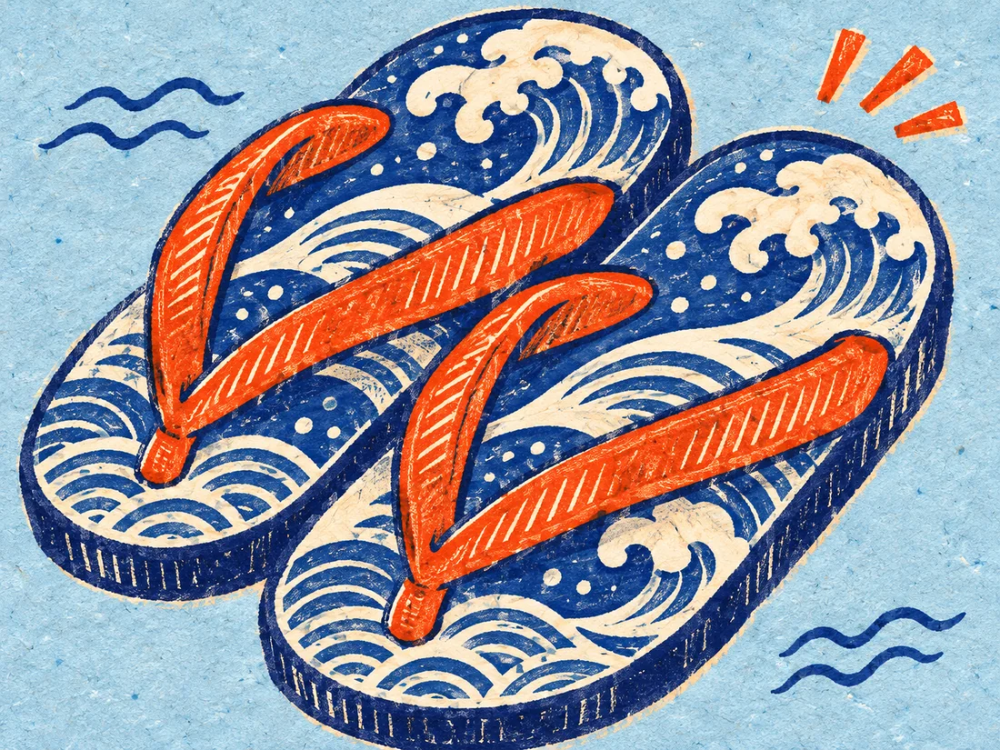
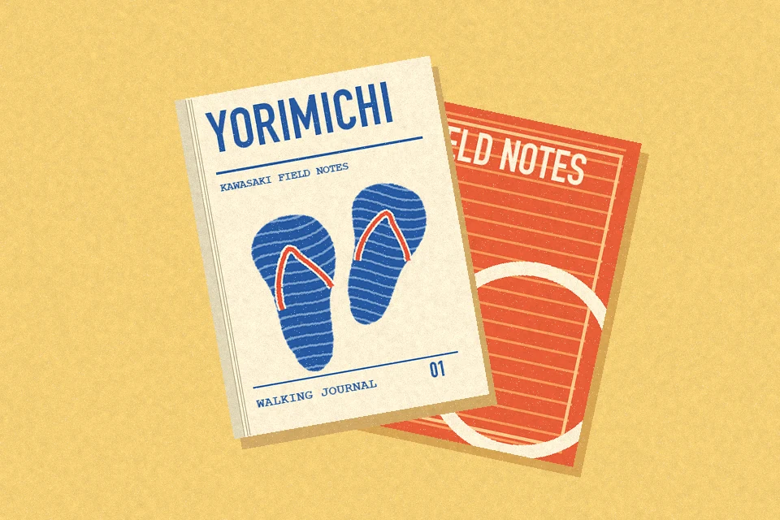
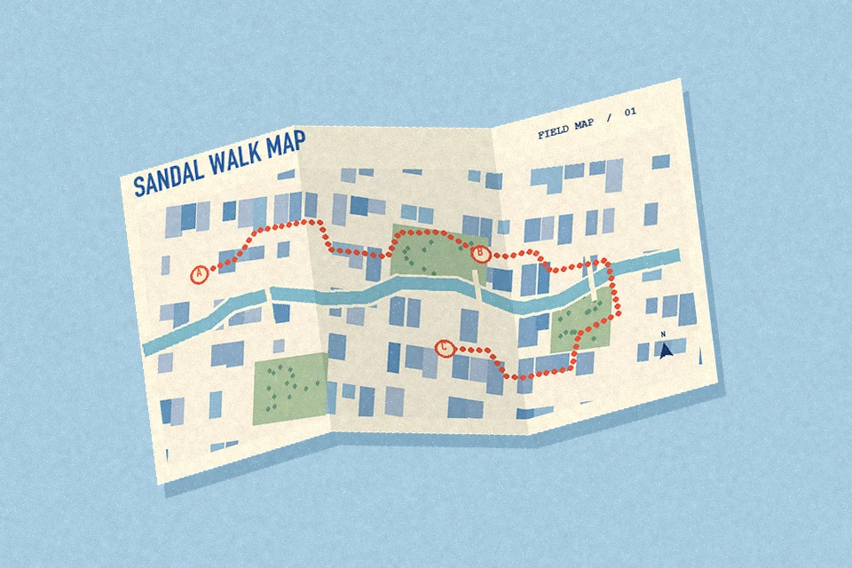

WANDER. NOTICE. REMEMBER.
まだ見ぬ
景色へ。サンダルで。
写真を撮る。全国各地を周る。
足が向くほうへ、好奇心が続くほうへ。
OKINAWA, JAPAN本島から見える伊江島
SCROLL TO EXPLORE A JOURNAL BY KAWASAKI
01 — THE TRAVELER
旅する人のこと予定にない道に、
心が動く。
Take the long way.

サンダルの川崎
遠くの絶景も、
いつもの町の路地裏も。
こんにちは、川崎です。ふだんの履き物はサンダル。
写真を撮りながら、全国各地を周っています。
目的地に着くことだけが、旅じゃない。
ふと立ち止まった場所や、なんとなく曲がった角に、忘れたくない景色がある。
そんな寄り道を、写真や言葉で残していく。
ここは、その小さな冒険の記録です。
02 — THE WAY I WANDER
旅と日々歩いて、見つけて。
心に残ったものを。
全国各地を周る
その土地の風景や町並みに触れながら、日本のあちこちへ。行ったことのない場所にも、もう一度歩きたい道にも。
IDEAS ALONG THE WAY
寄り道から、広がること。
ここからは、制作例につながる活動の構想です。- 01
町を歩く
路地や商店街で見つけた、気になる看板や建物を手帳に。
- 02
紙にまとめる
散歩のメモに絵と言葉を添えて、小冊子や地図に。
- 03
音を集める
足音、風、店先の声。町の気配を、音の記録に。
03 — THINGS I MAKE
作ったもの寄り道が、
かたちになる。
見つけた景色を、手に取れるものへ。
冊子、地図、音で表す、3つの制作例。以下の作品・制作年・仕様はサンプルです。

寄り道手帖
歩く途中で見つけた、町の小さなものを集めた冊子。
作品をひらく
散歩の帰りに手帳を開くと、いつも似たようなものを描いていました。角の欠けたタイル、日よけの縞模様、植木鉢の行列。そんな寄り道のスケッチを、一冊に綴じました。
文・絵・製本 川崎
文庫サイズ ／ 16ページ
この作品はポートフォリオのサンプルです。

サンダル散歩マップ
商店街から川べりまで、寄り道しながら歩くための地図。
作品をひらく
何度も歩いた界隈を、サンダルでひと回りできる散歩地図にしました。パン屋の軒先を曲がったら、次の角でちょっとひと休み。自分の好きな目印だけを描き込んでいます。
作図・編集 川崎
A4三つ折り ／ 両面印刷
この作品はポートフォリオのサンプルです。
路地裏ラジオ
路地で録った音と散歩の話をつないだ、短い音声作品。
作品をひらく
夕方の路地で録った足音や風鈴の音に、その日あったことを重ねて編集しました。第1回の舞台は雨上がりの商店街。シャッターが開く音から始まり、川べりの鳥の声で終わります。
録音・構成 川崎
第1回「雨上がりの商店街」 ／ 6分
この作品はポートフォリオのサンプルです。